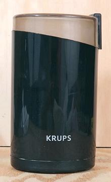

Spice Grinder

This is an essential for almost all cuisines, unless you like doing a
whole lot of pounding in a big
Stone Mortar. I use this grinder almost daily, so it's always
on the counter, where it takes very little space, and it's easy to clean.
It's an excellent companion to the
Mixie because it can grind amounts far smaller than the Mixie
can. What it can't do is grind wet or oily things, but the Mixie can do
that, and is far faster for large amounts - it can grind whole spices
enough for a 4 oz jar in 4 seconds, whereas this grinder would have to
do it in batches.
You probably don't want to use it also as your coffee grinder, unless
you like spice flavored coffee. This Krups unit can be had for as low as
2020 US $14, and will last for years.
More on Kitchen Gear.
ke_spcgrdz 201126 - www.clovegarden.com
©Andrew Grygus - agryg@clovegaden.com
Photos on this page not otherwise credited are ©
cg1 - Linking to and non-commercial
use of this page permitted